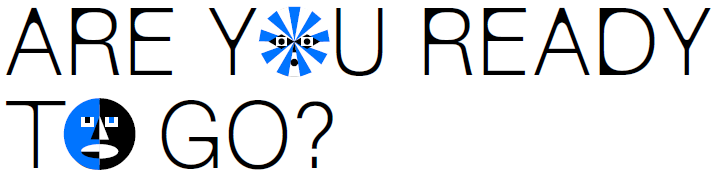

Welcome to Ctrl.Alt.Img, a project that delves into the world of AI. For underrepresented groups, AI can widen the digital and social divide. By using existing text-to-image tools, Ctrl.Alt.Img explores bias and stereotypes in artificially generated images. You’re invited to be part of this exploration! Add your voice to the conversation. You can find Ctrl.Alt.Img in Foam in the form of an interactive photo booth. Or here online as a quiz. Or both!